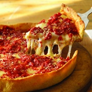

Ingredients
- 1/2 lb italian sausage
- 10 slices mozzarella cheese
- 1/2 cup freshly grated parmesan cheese
Dough
- 1 1/4 cups water, warm
- 2 1/4 teaspoons active dry yeast
- 2 teaspoons sugar
- 3 1/4 cups flour
- 3/4 cup cornmeal
- 2 teaspoons salt
- 2 tablespoons butter, melted
- 1 tablespoon olive oil
Sauce
- 2 tablespoons butter
- 1 onion, diced
- 1 teaspoon salt
- 1 teaspoon crushed red pepper
- 1 teaspoon dried oregano
- 2 cloves garlic, chopped
- 1 teaspoon sugar
- 30 oz crushed tomato with basil, 1 can
Preparation
- For the pizza sauce, melt the butter in a small saucepan and add the onion, salt, red pepper flakes, and oregano, and sauté until golden brown.
- Add the garlic, sugar, and crushed tomatoes, and simmer for roughly 20 minutes or until sauce thickens.
- For the dough, combine the active dry yeast, sugar, and warm water together and let sit for one minute.
- In a large mixing bowl, combine the flour, cornmeal, and salt.
- Add the yeast mixture and butter into the dry ingredients and stir until dough forms.
- Bring dough to floured surface and knead until dough forms into a ball.
- Move dough to large bowl drizzled with olive oil. Coat dough in oil and cover. Let rest for 1 hour.
- Remove dough and bring onto floured surface.
- Cut dough in half and begin working dough out, ensuring that it is at least 2 inches (5 cm) wider than your deep dish pan.
- Double wrap the remaining dough with plastic wrap and place in a resealable freezer bag. Freeze for up to a month.
- Preheat your oven to 425°F (215°C).
- Bring your dough into your oiled and floured deep dish pan.
- Using your hands press dough into sides of your dish making it as even as possible.
- Lay slices of mozzarella across the dough, covering the entire bottom.
- Add pieces of uncased italian sausage on top of the mozzarella and top with tomato sauce.
- Bake for 20-25 minutes or until crust starts to lightly brown and the cheese is melted.
- Garnish with parmesan, cut and serve.